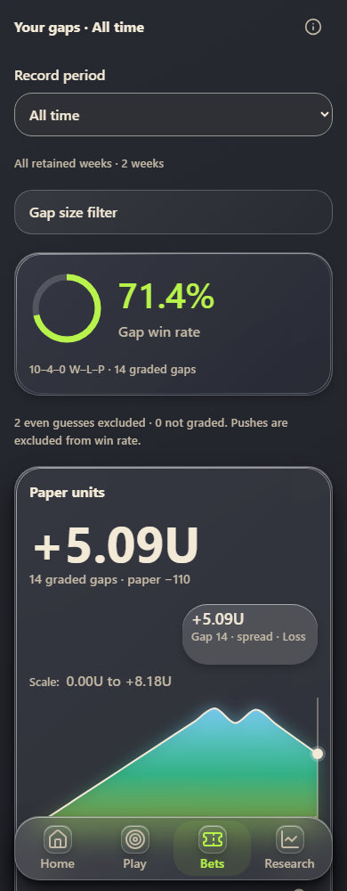
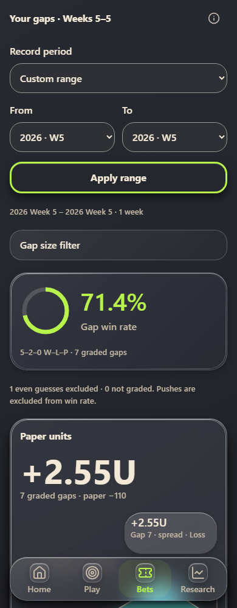
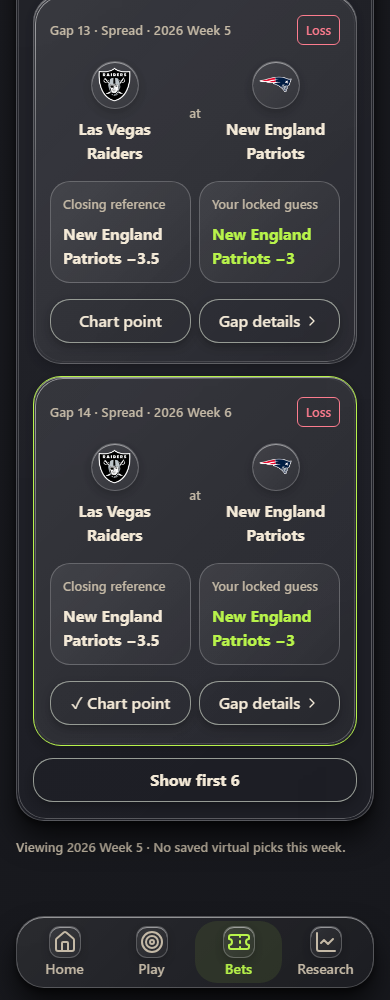

GUESS THE LINE · NOVEMBER 9, 2026
Gap period fixes
Working UI previews. Synthetic sample results.
Keep the selected period
All time stays selected after changing recommendation week and refreshing.

Keep the applied range
Custom range retains its From and To weeks after refreshing.

Show every expanded row
The expanded list grows from seven to all fourteen gaps across both weeks.
